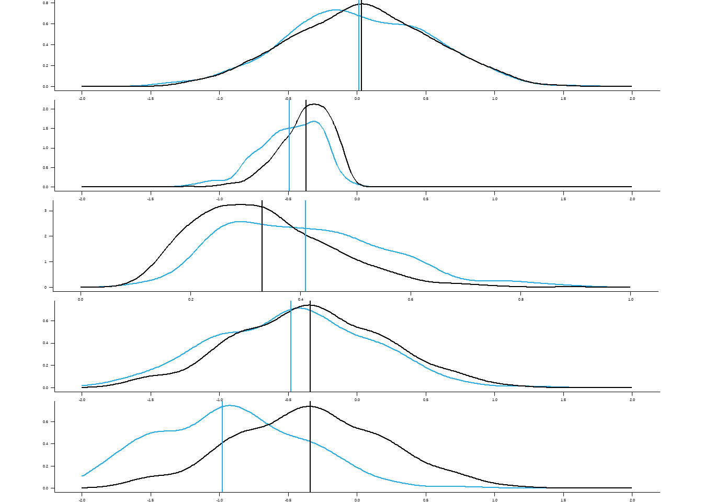

Show the code
# Simulate a study of bone density (bd) in a cohort of non-smokers and smokers.
cohort_size = 1000
# Bone density (bd) units g/cm^2 expressed as "T score" relative to young population.
# https://www.researchgate.net/publication/259608747_Age-Related_Changes_in_the_Prevalence_of_Osteoporosis_according_to_Gender_and_Skeletal_Site_The_Korea_National_Health_and_Nutrition_Examination_Survey_2008-2010
# https://www.chatswooddensitometry.com.au/bone-density-results.html
# T = 0 corresponds to about 1.2 g/cm^2
#
# -2.5 -1.0
# <--------------|------------|----------->
# osteoporosis osteopenia normal
smoking_bd_true_effect = -0.5
max_individual_covariate_effect = -0.5
# "treatment" refers to membership in smoking group
# covariate_effect - 0/1 - whether covariates impact bone density (for testing)
# treatment_effect - 0/1 - whether smoking impacts bone density (for testing)
make_cohort = function(covariate_effect=0,treatment_effect=0,seed,n=cohort_size) {
set.seed(seed)
blood = tibble(
id = 1:n,
#############################################################
# ALCOHOL
# g/day
# https://pophealthmetrics.biomedcentral.com/articles/10.1186/1478-7954-10-6/tables/2
# Distribution below from Table 2 (male, USA2)
# Min. 1st Qu. Median Mean 3rd Qu. Max. sd
# 0.0003 1.8410 7.5948 14.5125 19.2759 142.6630 19
alcohol = rgamma(cohort_size,scale=25.65,shape=0.53),
#############################################################
# STRESS
# perceived stress scale (PSS), 0-40
# https://www.slu.edu/medicine/family-medicine/pdfs/perceived-stress-scale.pdf
# Min. 1st Qu. Median Mean 3rd Qu. Max. sd
# 0.5266 6.9912 11.6250 12.4698 16.8827 37.3044 7.0
stress_base = bound(50*rbeta(cohort_size,2,6),c(0,40)),
#############################################################
# CAFFEINE
# mg/day
# https://www.ncbi.nlm.nih.gov/books/NBK202226/
# table 2-1 avg 165 90% 379
# Min. 1st Qu. Median Mean 3rd Qu. Max. 90%
# 0.034 75.355 166.391 200.789 294.416 773.001 428
caffeine = 800*rbeta(cohort_size,1,3),
) %>%
mutate(
# +0.5 stress for each alcohol g/day (arbitrary increase)
# e.g. those in 75% of alcohol consumption drink 18 g/day = +9 stress ~ s.d. of stress distribution
alcohol_stress_effect = alcohol / 2,
stress = bound(stress_base + alcohol_stress_effect,c(0,40))) %>%
mutate(bd_base = rnorm(cohort_size,0,0.5),
bd_covariate_effect = max_individual_covariate_effect*(
rescale(stress, to=c(0,1)) +
rescale(alcohol, to=c(0,1)) +
rescale(caffeine,to=c(0,1)))) %>%
# Each covariate (arbitrarily) contributes equally to the treatment score
# based on subject's percentile value in the covariate's distribution.
# The score is then rescaled to a probability in the range [0,1], which is then used
# to generate assignment to control (treatment = 0) or treatment (treatment = 1) groups.
mutate(
treatment_score = rescale(stress, to=c(0,1)) +
rescale(alcohol, to=c(0,1)) +
rescale(caffeine,to=c(0,1)),
treatment_p = rescale(treatment_score, to = c(0.1,0.9)),
treatment = rbinom(cohort_size, 1, treatment_p)) %>%
# Bone density
mutate(
# reduction in bd if subject is a smoker
bd_treatment_effect = treatment*smoking_bd_true_effect,
# final bd, including covariate effects (if toggled) and treatment effect (if toggled)
bd = bd_base + covariate_effect*bd_covariate_effect + treatment_effect*bd_treatment_effect)
}
# 1. Pick a seed
seed = 20
# 2. Cohort A : no treatment or covariate effects
cohort_a = make_cohort(seed=seed,covariate_effect=0,treatment_effect=0)
psych::describeBy(stress + alcohol + caffeine + bd ~ treatment, data = cohort_a)
Descriptive statistics by group
treatment: 0
vars n mean sd median trimmed mad min max range skew
stress 1 651 16.92 9.24 15.71 16.17 9.20 0.88 40.00 39.12 0.65
alcohol 2 651 10.78 15.06 5.10 7.63 6.89 0.00 108.19 108.19 2.68
caffeine 3 651 180.24 145.66 140.32 163.46 144.68 0.22 693.09 692.87 0.89
bd 4 651 0.03 0.51 0.03 0.03 0.53 -1.27 1.46 2.74 0.00
kurtosis se
stress -0.10 0.36
alcohol 9.34 0.59
caffeine 0.08 5.71
bd -0.36 0.02
------------------------------------------------------------
treatment: 1
vars n mean sd median trimmed mad min max range skew
stress 1 349 21.46 10.47 20.48 21.18 12.20 0.62 40.00 39.38 0.21
alcohol 2 349 18.47 23.38 9.47 13.97 12.96 0.00 142.97 142.97 2.30
caffeine 3 349 231.16 166.58 199.42 217.70 187.19 1.69 708.31 706.62 0.61
bd 4 349 0.01 0.52 -0.02 0.01 0.56 -1.38 1.57 2.95 -0.01
kurtosis se
stress -0.96 0.56
alcohol 6.69 1.25
caffeine -0.58 8.92
bd -0.27 0.03Show the code
# 3. Cohort B : covariate effect, no treatment effect
cohort_b = make_cohort(seed=seed,covariate_effect=1,treatment_effect=0)
psych::describeBy(stress + alcohol + caffeine + bd ~ treatment, data = cohort_b)
Descriptive statistics by group
treatment: 0
vars n mean sd median trimmed mad min max range skew
stress 1 651 16.92 9.24 15.71 16.17 9.20 0.88 40.00 39.12 0.65
alcohol 2 651 10.78 15.06 5.10 7.63 6.89 0.00 108.19 108.19 2.68
caffeine 3 651 180.24 145.66 140.32 163.46 144.68 0.22 693.09 692.87 0.89
bd 4 651 -0.34 0.55 -0.35 -0.34 0.59 -1.78 1.19 2.97 0.03
kurtosis se
stress -0.10 0.36
alcohol 9.34 0.59
caffeine 0.08 5.71
bd -0.28 0.02
------------------------------------------------------------
treatment: 1
vars n mean sd median trimmed mad min max range skew
stress 1 349 21.46 10.47 20.48 21.18 12.20 0.62 40.00 39.38 0.21
alcohol 2 349 18.47 23.38 9.47 13.97 12.96 0.00 142.97 142.97 2.30
caffeine 3 349 231.16 166.58 199.42 217.70 187.19 1.69 708.31 706.62 0.61
bd 4 349 -0.48 0.57 -0.46 -0.48 0.61 -2.08 1.32 3.40 -0.01
kurtosis se
stress -0.96 0.56
alcohol 6.69 1.25
caffeine -0.58 8.92
bd -0.19 0.03Show the code
#hist(cohort$bp)
# 4. Cohort C : covariate and treatment effects
cohort_c = make_cohort(seed=seed,covariate_effect=1,treatment_effect=1)
psych::describeBy(stress + alcohol + caffeine + bd ~ treatment, data = cohort_c)
Descriptive statistics by group
treatment: 0
vars n mean sd median trimmed mad min max range skew
stress 1 651 16.92 9.24 15.71 16.17 9.20 0.88 40.00 39.12 0.65
alcohol 2 651 10.78 15.06 5.10 7.63 6.89 0.00 108.19 108.19 2.68
caffeine 3 651 180.24 145.66 140.32 163.46 144.68 0.22 693.09 692.87 0.89
bd 4 651 -0.34 0.55 -0.35 -0.34 0.59 -1.78 1.19 2.97 0.03
kurtosis se
stress -0.10 0.36
alcohol 9.34 0.59
caffeine 0.08 5.71
bd -0.28 0.02
------------------------------------------------------------
treatment: 1
vars n mean sd median trimmed mad min max range skew
stress 1 349 21.46 10.47 20.48 21.18 12.20 0.62 40.00 39.38 0.21
alcohol 2 349 18.47 23.38 9.47 13.97 12.96 0.00 142.97 142.97 2.30
caffeine 3 349 231.16 166.58 199.42 217.70 187.19 1.69 708.31 706.62 0.61
bd 4 349 -0.98 0.57 -0.96 -0.98 0.61 -2.58 0.82 3.40 -0.01
kurtosis se
stress -0.96 0.56
alcohol 6.69 1.25
caffeine -0.58 8.92
bd -0.19 0.03Show the code
# Naive model that tests bp difference without accounting for covariates
means = cohort_c |> group_by(treatment) |> summarize(mean(bd))
effect = as.numeric(means[2,2]-means[1,2])
effect[1] -0.639786Show the code
# Cohort A has no covariate or treatment effects. Both treated (smokers) and control (non-smokers)
# should have the same distribution of bone density (bd)
p1 = ggplot() + geom_density(data=cohort_a |> filter(treatment==T),aes(bd),color=palette[1]) +
geom_density(data=cohort_a |> filter(treatment==F),aes(bd),color="black") +
geom_vline(xintercept = cohort_a |> filter(treatment==T) |> select(bd) |> as_vector() |> mean(),color=palette[1]) +
geom_vline(xintercept = cohort_a |> filter(treatment==F) |> select(bd) |> as_vector() |> mean()) +
scale_x_continuous(lim=c(-2,2),breaks=seq(-2,2,by=0.5))
# The magnitude of the covariate effect.
p2 = ggplot() + geom_density(data=cohort_b |> filter(treatment==T),aes(bd_covariate_effect),color=palette[1]) +
geom_density(data=cohort_b |> filter(treatment==F),aes(bd_covariate_effect),color="black") +
geom_vline(xintercept = cohort_b |> filter(treatment==T) |> select(bd_covariate_effect) |> as_vector() |> mean(),color=palette[1]) +
geom_vline(xintercept = cohort_b |> filter(treatment==F) |> select(bd_covariate_effect) |> as_vector() |> mean()) +
scale_x_continuous(lim=c(-2,2),breaks=seq(-2,2,by=0.5))
# Treatment probability.
p2b = ggplot() + geom_density(data=cohort_b |> filter(treatment==T),aes(treatment_p),color=palette[1]) +
geom_density(data=cohort_b |> filter(treatment==F),aes(treatment_p),color="black") +
geom_vline(xintercept = cohort_b |> filter(treatment==T) |> select(treatment_p) |> as_vector() |> mean(),color=palette[1]) +
geom_vline(xintercept = cohort_b |> filter(treatment==F) |> select(treatment_p) |> as_vector() |> mean()) +
scale_x_continuous(lim=c(0,1),breaks=seq(0,1,by=.2))
# Cohort B : covariate effect but no treatment effect
p3 = ggplot() + geom_density(data=cohort_b |> filter(treatment==T),aes(bd),color=palette[1]) +
geom_density(data=cohort_b |> filter(treatment==F),aes(bd),color="black") +
geom_vline(xintercept = cohort_b |> filter(treatment==T) |> select(bd) |> as_vector() |> mean(),color=palette[1]) +
geom_vline(xintercept = cohort_b |> filter(treatment==F) |> select(bd) |> as_vector() |> mean()) +
scale_x_continuous(lim=c(-2,2),breaks=seq(-2,2,by=0.5))
# Cohort B : covariate and treatment effect
p4 = ggplot() + geom_density(data=cohort_c |> filter(treatment==T),aes(bd),color=palette[1]) +
geom_density(data=cohort_c |> filter(treatment==F),aes(bd),color="black") +
geom_vline(xintercept = cohort_c |> filter(treatment==T) |> select(bd) |> as_vector() |> mean(),color=palette[1]) +
geom_vline(xintercept = cohort_c |> filter(treatment==F) |> select(bd) |> as_vector() |> mean()) +
scale_x_continuous(lim=c(-2,2),breaks=seq(-2,2,by=0.5))
multiplot(plot_theme(p1,aspect),plot_theme(p2,aspect),plot_theme(p2b,aspect),plot_theme(p3,aspect),plot_theme(p4,aspect),cols=1)
Show the code
dev.copy2pdf(file = "fig-distributions.pdf",useDingbats=FALSE,width=5,height=3)png
2 Show the code
cohort = cohort_c
model_matched = lm(bd ~ treatment,
data = cohort_c)
summary(model_matched)
Call:
lm(formula = bd ~ treatment, data = cohort_c)
Residuals:
Min 1Q Median 3Q Max
-1.60017 -0.40313 0.00176 0.39403 1.80181
Coefficients:
Estimate Std. Error t value Pr(>|t|)
(Intercept) -0.34018 0.02179 -15.61 <2e-16 ***
treatment -0.63979 0.03689 -17.34 <2e-16 ***
---
Signif. codes: 0 '***' 0.001 '**' 0.01 '*' 0.05 '.' 0.1 ' ' 1
Residual standard error: 0.556 on 998 degrees of freedom
Multiple R-squared: 0.2316, Adjusted R-squared: 0.2309
F-statistic: 300.9 on 1 and 998 DF, p-value: < 2.2e-16